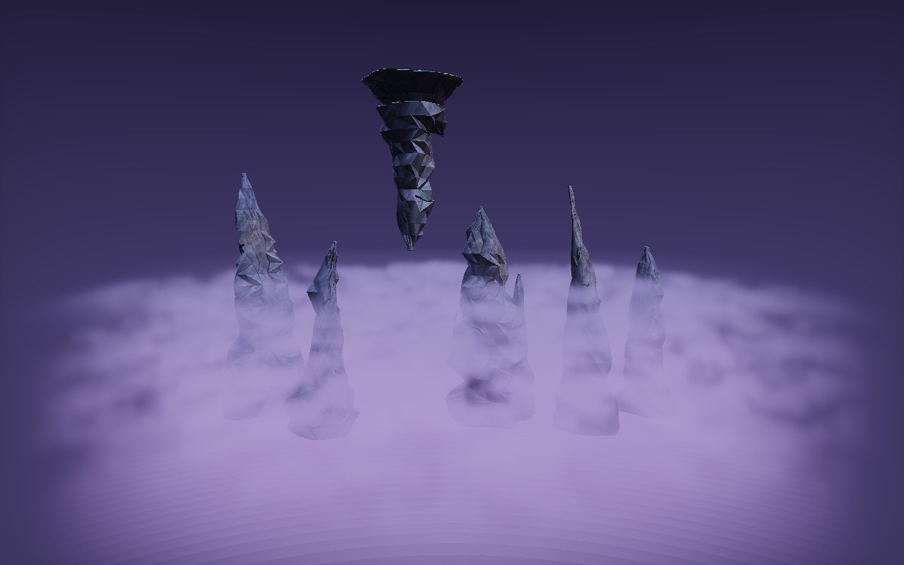
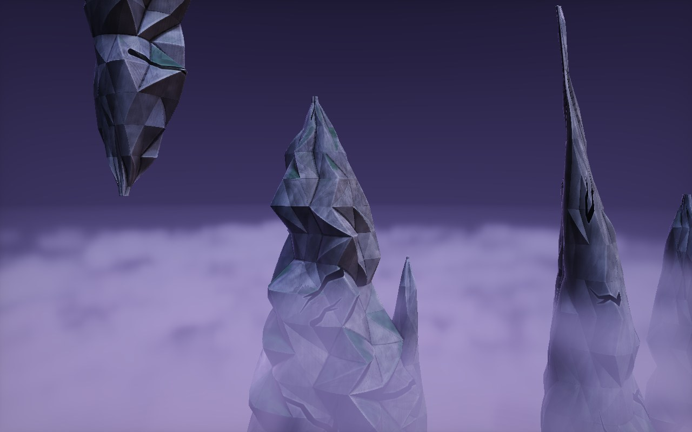
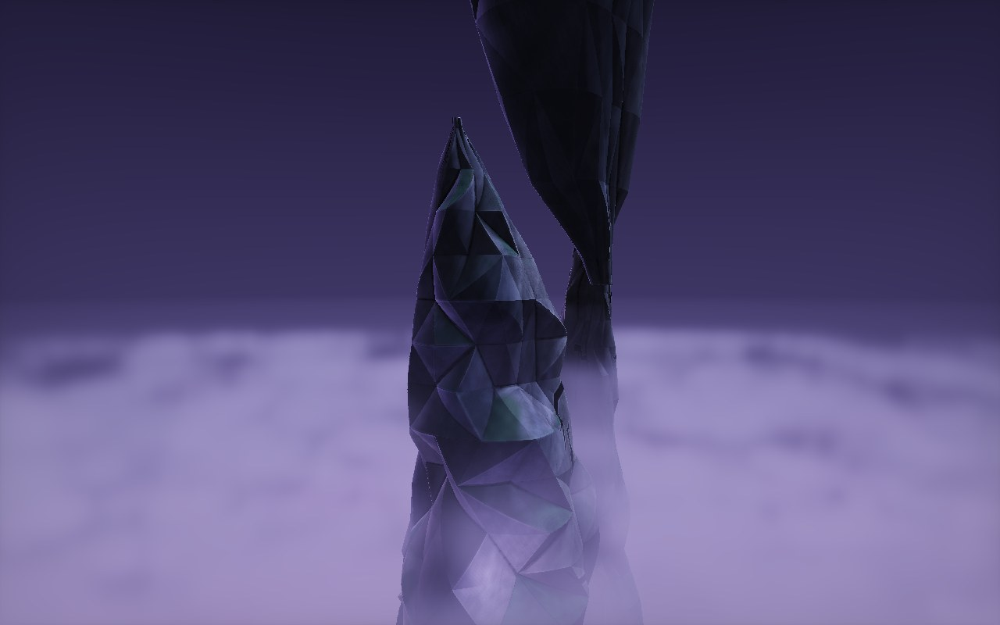
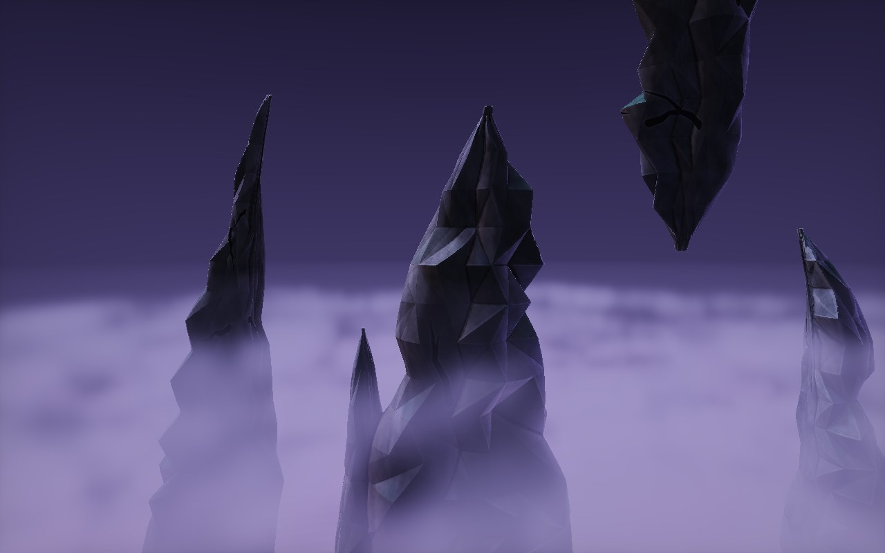
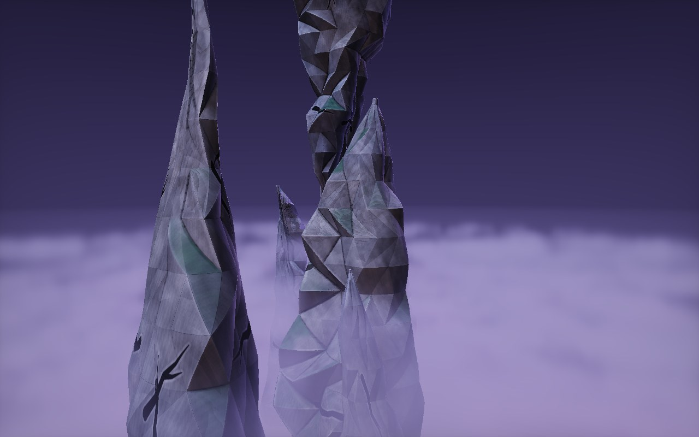
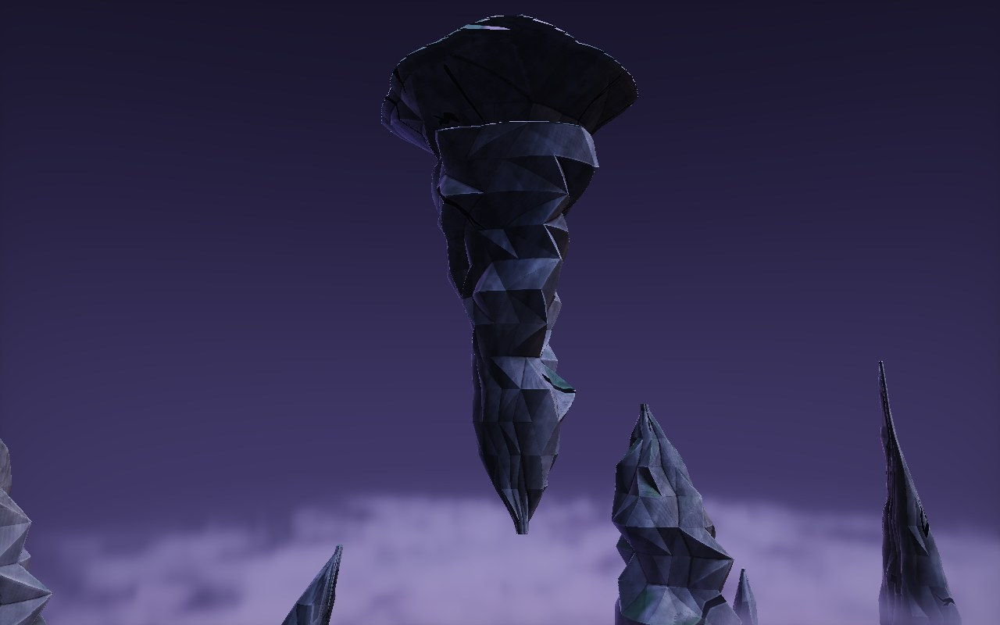

<title>Cave Spire</title>
<meta name="claude:viewport-fit-sides" content="cover">
<link rel="stylesheet" href="https://fonts.googleapis.com/css2?family=Baloo+2:wght@600;800&family=Atkinson+Hyperlegible:wght@400;700&display=swap">
<style>
/* Layout: the lineup, the same spire from all four sides, then what changed. Matches the canopy hole's page. */
:root {
  --bg: #0c1016; --card: #141a22; --line: #26313d; --fg: #e8eef2; --muted: #9aa8b4; --accent: #c49bff;
  --display: "Baloo 2", "Trebuchet MS", sans-serif; --body: "Atkinson Hyperlegible", system-ui, sans-serif;
  color-scheme: dark;
}
body { background: var(--bg); color: var(--fg); font-family: var(--body); font-size: 15px; line-height: 1.5; }
main { max-width: 1280px; margin: 0 auto; padding-block: 28px 44px; padding-left: max(16px, env(safe-area-inset-left, 0px)); padding-right: max(16px, env(safe-area-inset-right, 0px)); display: flex; flex-direction: column; gap: 24px; }
.eyebrow { font-size: 12px; letter-spacing: 0.1em; text-transform: uppercase; color: var(--muted); margin: 0; }
h1 { font-family: var(--display); font-weight: 800; font-size: 36px; line-height: 1.05; margin: 2px 0 6px; text-wrap: balance; }
h2 { font-family: var(--display); font-weight: 600; font-size: 20px; margin: 0 0 8px; }
.lede { margin: 0; color: var(--muted); max-width: 74ch; }
.hero { position: relative; border: 1px solid var(--line); border-radius: 12px; overflow: hidden; background: #05070a; aspect-ratio: 8 / 5; max-width: 100%; }
.hero canvas { width: 100%; height: 100%; display: block; }
.hero .tag { position: absolute; left: 12px; bottom: 10px; font-size: 12px; color: var(--fg); background: rgba(5,7,10,0.65); padding: 3px 10px; border-radius: 999px; }
.hero button { position: absolute; right: 12px; bottom: 10px; font: inherit; font-size: 12px; color: var(--fg); background: rgba(5,7,10,0.65); border: 1px solid var(--line); padding: 3px 12px; border-radius: 999px; cursor: pointer; }
.hero button:focus-visible { outline: 2px solid var(--accent); outline-offset: 2px; }
.grid { display: grid; grid-template-columns: repeat(2, minmax(0, 1fr)); gap: 14px; }
@media (max-width: 760px) { .grid { grid-template-columns: 1fr; } }
figure { margin: 0; background: var(--card); border: 1px solid var(--line); border-radius: 12px; overflow: hidden; min-width: 0; }
figure img { display: block; width: 100%; height: auto; aspect-ratio: 8 / 5; object-fit: cover; }
figcaption { padding: 10px 14px 12px; font-size: 14px; color: var(--muted); }
figcaption b { color: var(--fg); font-weight: 700; }
.cols { display: grid; grid-template-columns: repeat(2, minmax(0, 1fr)); gap: 20px; }
@media (max-width: 760px) { .cols { grid-template-columns: 1fr; } }
ul { margin: 0; padding-left: 18px; display: flex; flex-direction: column; gap: 5px; }
</style>

<main>
  <header>
    <p class="eyebrow">Far side cave · new asset · round 6 · 2026-11-04</p>
    <h1>The cave spire</h1>
    <p class="lede">No more flat sides. The big cuts that left plain sheets on two sides are gone. The breaks are now worked into the faces themselves and spread evenly all the way round, so every side has the same broken detail. The middle four views are one spire from all four sides, so you can check.</p>
  </header>
  <section class="grid" aria-label="Views">
    <figure><figcaption><b>The lineup.</b> Each has its own outline.</figcaption></figure>
    <figure><figcaption><b>Side one.</b></figcaption></figure>
    <figure><figcaption><b>Side two.</b></figcaption></figure>
    <figure><figcaption><b>Side three.</b></figcaption></figure>
    <figure><figcaption><b>Side four.</b></figcaption></figure>
    <figure><figcaption><b>Hanging.</b> The same piece upside down.</figcaption></figure>
  </section>
  <section class="cols">
    <div>
      <h2>What changed</h2>
      <ul>
        <li>Five shears and seven gouges, spread evenly round each spire and broken into small flat faces, not one big flat cut</li>
        <li>More and smaller faces, about 13 round it and 13 studs tall</li>
        <li>Close to round in section, where it used to be a flattened blade</li>
        <li>The rock texture from the wall: mottling, grain, small broken facets, worn pale edges, crevice grime and a few of the approved cracks</li>
      </ul>
    </div>
    <div>
      <h2>Kept from earlier rounds</h2>
      <ul>
        <li>Broken outline that pinches and bulges, not a cone</li>
        <li>No spiral, and no thick lines down it</li>
      </ul>
    </div>
  </section>
</main>
